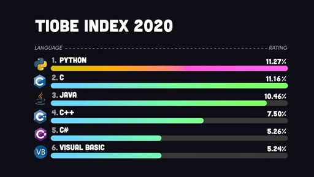
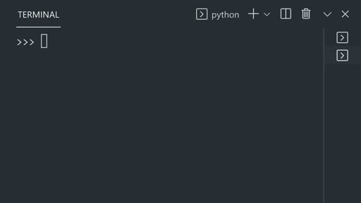
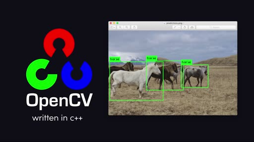

/scenelens
Give Claude a smarter video input. Scene-aware frame extraction, per-frame OCR, and auto-chunked Whisper transcripts.



Three frames scenelens captured from a 2:23 video — clustered on real visual changes, not duplicates of a talking head.
Three changes that matter
Scene-aware sampling, not fixed fps
Most video skills grab a frame every N seconds. In a 10-minute video that's 9 minutes of talking head plus 1 minute of demo, fixed fps wastes ~72 of an 80-frame budget on duplicate shots of the same face. scenelens uses ffmpeg's select=gt(scene,T) filter to pick frames where visual content actually changes. Same token budget, dramatically better signal. Auto-falls back to fixed fps when no scene cuts are detected (single-take talking heads).
OCR every frame, read text as text
If a frame has slides, code, terminals, or any on-screen text, Tesseract extracts it as text alongside the image. Claude reads "the function returns null" instead of burning vision tokens decoding pixels. Optional — silently skipped if Tesseract isn't installed. On a real Karpathy lecture frame, OCR went from 0 chars at default resolution to 11,653 chars with --resolution 1024.
Auto-chunked Whisper transcription
Whisper's API caps at 25 MB per upload. Most "video for AI" skills hard-fail on 50+ minute audio. scenelens auto-splits oversize audio into ≤24 MB chunks, transcribes each separately, and merges segments back together with offset timestamps. A 4-hour podcast just means more API calls, not failure.
Install
Claude Code CLI
/plugin marketplace add ravindranathpathi/scenelens
/plugin install scenelens@scenelensclaude.ai Web
Download the .skill bundle and drag it into Settings → Capabilities → Skills.
Codex Generic
git clone https://github.com/ravindranathpathi/scenelens.git \
~/.codex/skills/scenelensFirst run Setup
scenelens checks for ffmpeg, yt-dlp, and (optionally) tesseract on first run. On macOS it auto-installs via Homebrew. On Linux/Windows it prints exact apt / winget / pipx commands. Whisper API key is optional — only used when a video has no native captions.
Tested, not promised
Every claim above is backed by a 64-test eval suite plus end-to-end runs on real public YouTube videos. Full evidence is in the repo.
Try it
Once installed, drop a URL and a question:
/scenelens https://www.youtube.com/watch?v=x7X9w_GIm1s what is this video about?Claude downloads it, picks frames at scene changes, runs OCR on each, pulls captions, then answers from frames + OCR + transcript. About 30 seconds end-to-end on a 2-minute video.
Need to focus on a specific moment?
/scenelens https://youtu.be/long-podcast --start 1:12:00 --end 1:13:00 \
what was just argued?Need to read tiny on-screen code?
/scenelens ~/screen-recording.mp4 --resolution 1024 \
what error message does the terminal show?